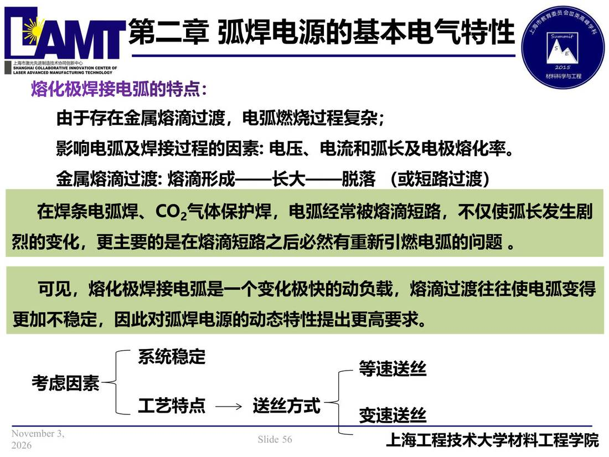

02 第2章 基本电气特性/p056 由于存在金属熔滴过渡，电弧燃烧过程复杂
p056 由于存在金属熔滴过渡，电弧燃烧过程复杂
📄 原文：📄 弧焊电源 课件（PDF 第 56 页）（幻灯片 56/273；PDF 第 56 页）
由于存在金属熔滴过渡，电弧燃烧过程复杂

讲义原文
由于存在金属熔滴过渡，电弧燃烧过程复杂；
影响电弧及焊接过程的因素: 电压、电流和弧长及电极熔化率。
金属熔滴过渡: 熔滴形成——长大——脱落 （或短路过渡）
在焊条电弧焊、CO2气体保护焊，电弧经常被熔滴短路，不仅使弧长发生剧烈的变化，更主要的是在熔滴短路之后必然有重新引燃电弧的问题 。
可见，熔化极焊接电弧是一个变化极快的动负载，熔滴过渡往往使电弧变得更加不稳定，因此对弧焊电源的动态特性提出更高要求。
系统稳定
等速送丝
考虑因素
工艺特点
送丝方式
变速送丝